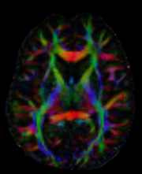

Diffusion Imaging In Python#
DIPY is the paragon 3D/4D+ imaging library in Python. Contains generic methods for spatial normalization, signal processing, machine learning, statistical analysis and visualization of medical images. Additionally, it contains specialized methods for computational anatomy including diffusion, perfusion and structural imaging.
Highlights#
DIPY 1.7.0 is now available. New features include:
NF: BundleWarp - Streamline-based nonlinear registration method for bundles added.
NF: DKI+ - Diffusion Kurtosis modeling with advanced constraints added.
NF: Synb0 - Synthetic b0 creation added using deep learning added.
NF: New Parallel Transport Tractography (PTT) added.
NF: Fast Streamline Search algorithm added.
NF: New denoising methods based on 1D CNN added.
Handle Asymmetric Spherical Functions.
Large update of DIPY Horizon features.
Multiple Workflows updated
Large codebase cleaning.
Large documentation update. Integration of Sphinx-Gallery.
Closed 53 issues and merged 34 pull requests.
See Older Highlights.
Announcements#
DIPY 1.7.0 released April 23, 2023.
DIPY 1.6.0 released January 16, 2023.
DIPY 1.5.0 released March 11, 2022.
See some of our Past Announcements
Getting Started#
Here is a quick snippet showing how to calculate color FA also known as the DEC map. We use a Tensor model to reconstruct the datasets which are saved in a Nifti file along with the b-values and b-vectors which are saved as text files. Finally, we save our result as a Nifti file
fdwi = 'dwi.nii.gz'
fbval = 'dwi.bval'
fbvec = 'dwi.bvec'
from dipy.io.image import load_nifti, save_nifti
from dipy.io import read_bvals_bvecs
from dipy.core.gradients import gradient_table
from dipy.reconst.dti import TensorModel
data, affine = load_nifti(fdwi)
bvals, bvecs = read_bvals_bvecs(fbval, fbvec)
gtab = gradient_table(bvals, bvecs)
tenmodel = TensorModel(gtab)
tenfit = tenmodel.fit(data)
save_nifti('colorfa.nii.gz', tenfit.color_fa, affine)
As an exercise, you can try to calculate color FA with your datasets. You will need to replace the filepaths fdwi, fbval and fbvec. Here is what a slice should look like.
Next Steps#
You can learn more about how you to use DIPY with your datasets by reading the examples in our Documentation.
Support#
We acknowledge support from the following organizations:
The department of Intelligent Systems Engineering of Indiana University.
The National Institute of Biomedical Imaging and Bioengineering, NIH.
The Gordon and Betty Moore Foundation and the Alfred P. Sloan Foundation, through the University of Washington eScience Institute Data Science Environment.
Google supported DIPY through the Google Summer of Code Program during Summer 2015, 2016 and 2018.
The International Neuroinformatics Coordination Facility.